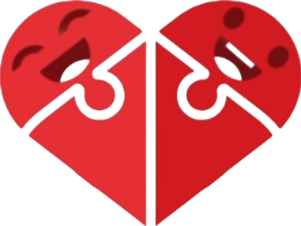
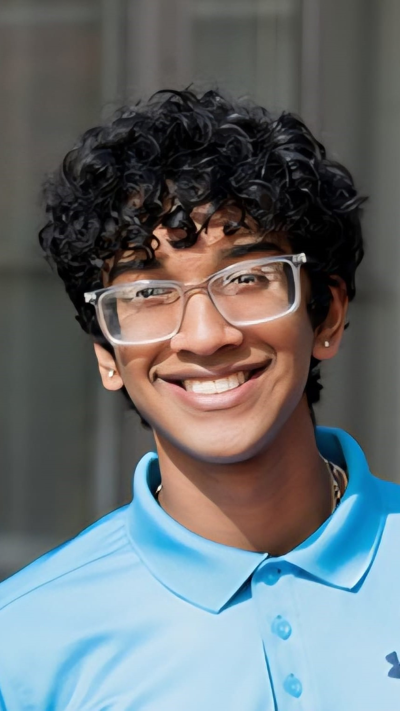
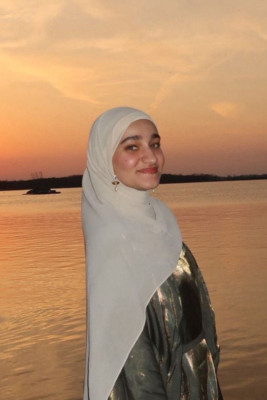

Spreading Joy, One Gift at a Time
We are a student-led nonprofit organization dedicated to creating and donating handcrafted toys to children in hospitals and shelters. Our mission is grounded in the belief that every child deserves moments of joy and comfort, particularly during challenging circumstances.
Meet Our Team

Rohit Raghunathan
Founder & President
Rohit Raghunathan is a Biomedical Engineering and Pre-medical student at UW-Madison and co-founder of Toys for Joy. His passion lies in combining technical creativity with compassion to design meaningful interventions for children in need. With experience in engineering, research, and community service, Rohit leads outreach and partnership initiatives, working to expand the organization's impact across Wisconsin through strategic collaborations with therapy centers and children's shelters.
Zakki Mirza
Founder & President
Zakki Mirza is a pre-medical student at the University of Wisconsin-Madison studying Biomedical Engineering. As a certified EMT, he has witnessed firsthand the profound impact that comfort and care can have during difficult circumstances. He co-founded Toys for Joy to channel his healthcare passion into community service, leading initiatives that support children's hospitals, shelters, and local communities across Wisconsin through innovative 3D-printed toys and essential donations. His work exemplifies the integration of technological innovation with compassionate service.
Anuj Janardhanam
Vice President
Anuj Janardhanam is a sophomore at the University of Wisconsin-Madison, majoring in Biomedical Engineering. Having grown up with hearing loss, Anuj has a deep personal understanding of how medical technology can transform lives. His hearing aids provided not only improved hearing but also enhanced confidence and social connection, experiences that fuel his commitment to helping others through engineering and healthcare. At Toys for Joy, Anuj manages financial operations, including expense tracking, supply management, and cultivating relationships with donors, fundraisers, and community partners to expand organizational reach. His work reflects a broader commitment to combining technical expertise with empathetic service.
Girish Dodda
Technology Lead
Girish Dodda is pursuing his Master's degree in Computer Science at The Ohio State University and serves as Technology Lead for Toys for Joy. With expertise in front-end development and accessible, responsive design, Girish maintains the organization's web presence, ensuring optimal user experience through careful attention to detail. His work encompasses website maintenance, content updates, and implementing design elements that reflect the organization's mission of bringing comfort and hope to children through inclusive, user-centered digital experiences.


Yasmeen Patrick
Outreach Coordinator
Yasmeen Patrick is a sophomore studying Global Health on the Pre-PA track at the University of Wisconsin-Madison. As Outreach Coordinator for Toys for Joy, she works to build meaningful community partnerships, expand engagement, and increase awareness of the organization's mission to spread joy to children in hospitals and shelters. With a strong interest in health equity and community-centered care, Yasmeen is passionate about serving underserved populations and creating spaces where every child feels valued and supported. She is excited to help grow Toys for Joy's impact and connect more communities to its mission of compassion and service.
Srivally Gudimella
Secretary
Srivally Gudimella is a sophomore studying Biology on the pre-health track at the University of Wisconsin-Milwaukee. As the Secretary for Toys for Joy, she works to build community connections, support organizational initiatives, and help manage communication and resources effectively. As an aspiring healthcare professional, she is dedicated to building both her scientific knowledge and her ability to make a meaningful impact in her community. With a strong interest in pursuing a pre-med path, Srivally is passionate about helping her community, supporting those in need, and making a positive difference through service and care. She is excited to continue growing academically and working toward a future career in medicine where she can give back and improve the lives of others.